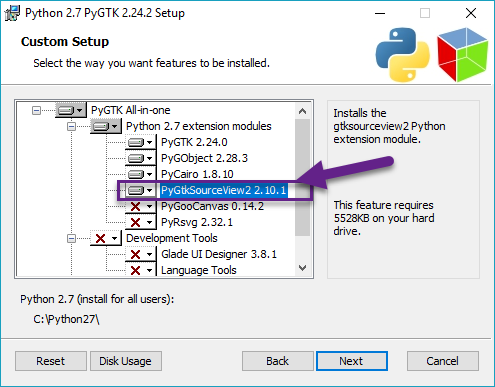

Index
- Images
- Tables
- Codebox
- Files
- Links
- Anchors
- Table of Contents
- Timestamps
- Special Characters
- Horizontal Rule
Windows
Windows
• Steps 1-8: Installing Python2.7 and adding it to environment variables.
• Steps 9-16: Installing Cherrytree dependencies.
• Steps 17-20: Configuring the Cherrytree directory.
Installing Python 2.7
1. If a variant of Python 2.7 is not installed to your machine, go to the Python Releases for Windows page and click Latest version of Python 2.
2. Download and run the Windows x86 MSI installer version, then follow its installation steps.
3. (Optional) Go to the folder where you installed Python 2.7 and rename the python application to python2 to avoid conflicting with Python3.
4. Copy the path of your installation directory.
5. Open your environment variable settings.
NOTE: Click here for instructions to add environment variables in Windows 7.
6. Select Path and click Edit.
7. Click New then paste the path of your Python 2.7 installation into the text field.
8. Click Ok to close the window.
Installing Cherrytree Dependencies
9. Download the GTK2 Windows bundle.
10. Unzip the GTK2 bundle.
11. Open the bundle, move into the bin folder, then copy its path and add it to your environment variables.
NOTE: For example, if you move the bundle into your C: drive, your path should look like C:\gtk2\bin.
12. Download the PYGTK installer.
13. Run the installation file and follow its steps to install. Ensure PYGtkSourceView2 is toggled on the Custom Setup page.
Figure 3.01

14. Download python 2.7 lib files.
15. Unzip the folder and move the content from C_Python27_Lib to the Lib folder within your Python 2.7 installation.
16. (Optional) Open Command Prompt and install dependencies for additional functionality using the commands:
• For spell check functionality.
python2 -m pip install pyenchant
• For better decoding support of imported and pasted text.
python2 -m pip install chardet
Configuring the Cherrytree Directory
17. Clone or download the Cherrytree repository.
18. Download a portable version of 7zip, which is required to password-protect files.
19. Extract its content and move the 7za.exe file into the root folder of your local Cherrytree directory.
20. Open Command Prompt, change to the directory containing your local copy of Cherrytree, and run:
python2 cherrytree